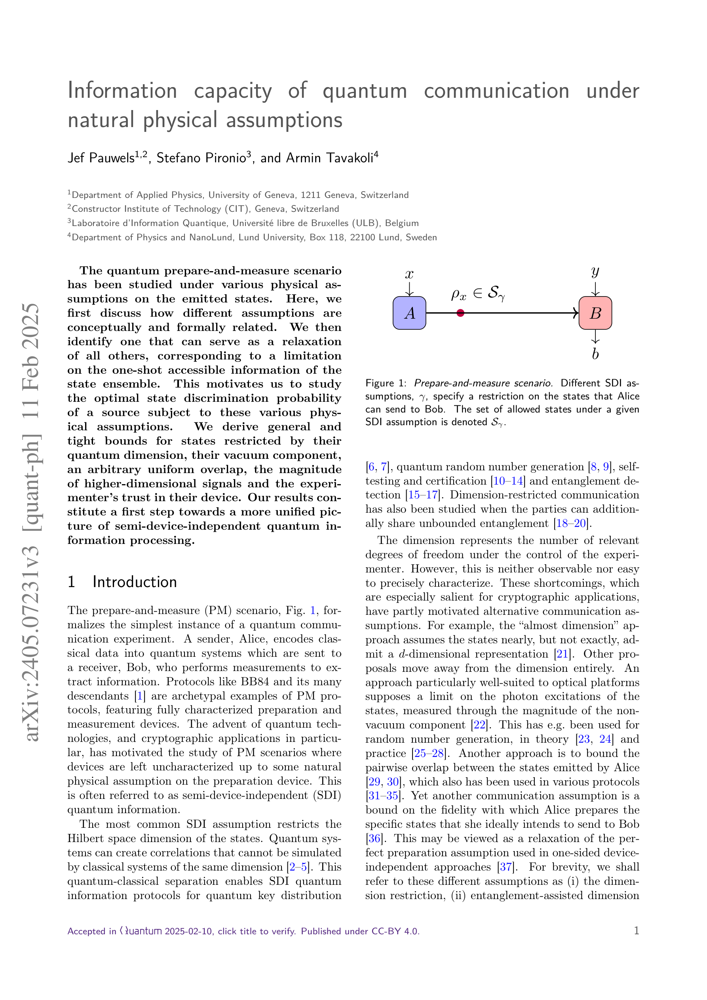
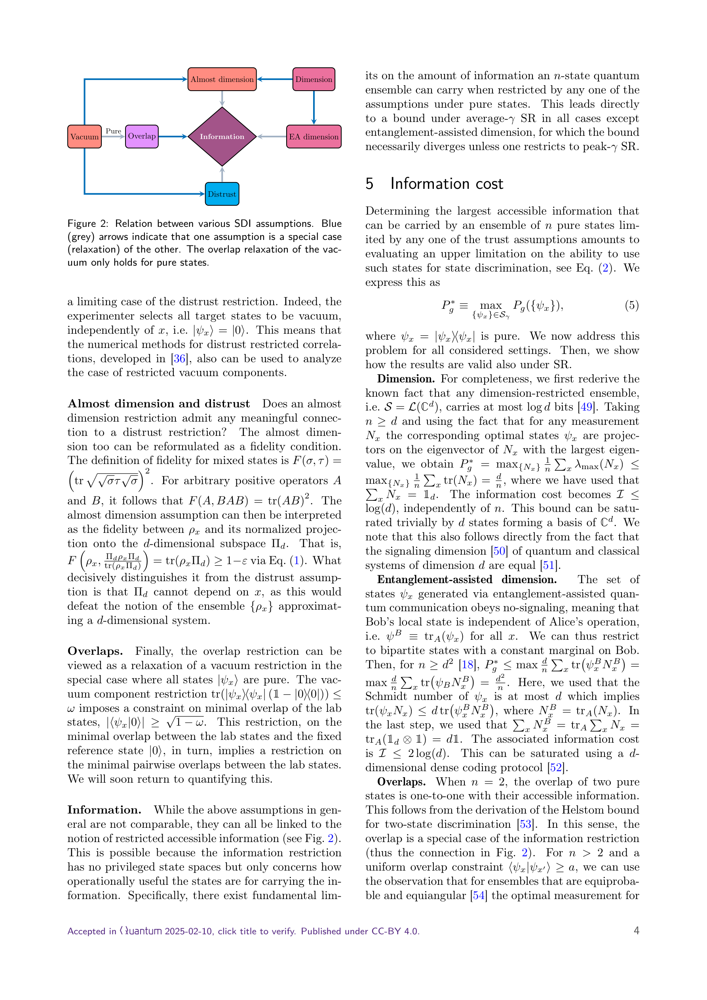

저자: Jef Pauwels, Stefano Pironio, Armin Tavakoli | 날짜: 2025-02-18 | DOI: 10.22331/q-2025-02-18-1637

Figure 1: Prepare-and-measure scenario. Different SDI as-
양자 준비-측정 시나리오에서 다양한 물리적 제약 조건 하에서 양자 통신의 정보 용량을 분석하고, 최적 상태 판별 확률에 대한 일반적이고 타이트한 경계를 도출한다.

Figure 2: Relation between various SDI assumptions. Blue
Figure 1: Prepare-and-measure scenario. Different SDI as-
총평: 본 논문은 semi-device-independent 양자 정보 처리의 다양한 물리적 가정들을 정보-이론적 관점에서 통일적으로 분석하고, 각 제약 하의 최적 상태 판별 확률에 대한 일반적 경계를 제시함으로써 양자 통신 이론의 기초를 단단히 한다.